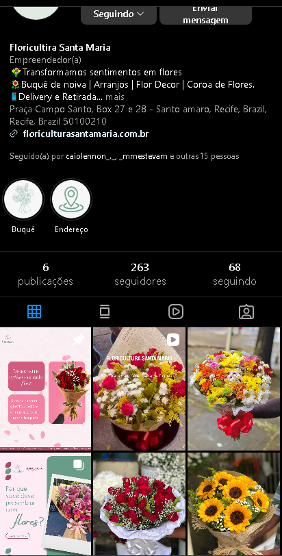

Floricultura / Identidade visual e vitrine
Floricultura Santa Maria
Uma vitrine para apresentar os arranjos da floricultura, com uma identidade que se estende do site ao Instagram.
 (abre a imagem em nova aba)
(abre a imagem em nova aba)

(abre a imagem em nova aba)Escopo do projeto
O que fizemos
- #8B3A5B
- #D86B8F
- #FCE8E8
- #6B9B8B
- #8BC2B2
- Identidade visual
- Tons florais e verdes na paleta, com elementos aplicados ao site e às redes sociais.
- Vitrine e pedidos
- Apresentação dos arranjos e integração do fluxo de pedidos ao site.
- Redes sociais
- Renovação do perfil e planejamento de conteúdo para a floricultura.
Agência Elevare